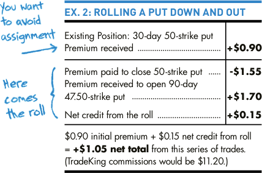

Rolling a cash-secured put
To avoid assignment on a short put, the roll here is “down and out.”
For example, let’s say you’ve sold a 30-day cash-secured put on stock XYZ with a strike price of $50. And let’s say you received $0.90 for the put when the stock was trading at $51. Now, close to expiration, the stock has dropped and it’s trading at $48.50.
The only way to avoid assignment for sure is to buy back the front-month 50-strike put before it is assigned, and cancel your obligation. The problem is, the front-month put you originally sold for $0.90 is now trading at $1.55. Here’s how you roll.
Using TradeKing’s spread order screen, you enter a buy-to-close order for the front-month 50-strike put. In the same trade, you sell to open a back-month 47.50-strike put (rolling down), 90 days from expiration (rolling out) which is trading for $1.70. By doing this, you’ll receive a net credit of $0.15 ($1.70 back-month sale price - $1.55 front-month purchase price) or $15 total.
You were able to roll for a net credit even though the back-month put is further OTM because of the considerable increase in time value of the 90-day option.
If the 47.50-strike put expires worthless, when all is said and done in 90 days, you’ll net $1.05. Here’s the math: You lost a total of $0.65 on the front-month put ($1.55 paid to close - $0.90 received to open). However, you received a premium of $1.70 for the 47.50-strike put, so you netted $1.05 ($1.70 back month premium - $0.65 front-month loss) or $105 total (see Ex.2 above).
However, every time you roll down and out, you may be taking a loss on the front-month put. Furthermore, you have not secured any gains on the back-month put because the market still has time to move against you. And that means you could wind up compounding your losses.
Options Guy's Tips
 You should usually roll out the shortest possible time period. That way, you will be faced with less market uncertainty. You may even wish to consider paying a small net debit for the roll to obtain the shorter time period.
You should usually roll out the shortest possible time period. That way, you will be faced with less market uncertainty. You may even wish to consider paying a small net debit for the roll to obtain the shorter time period.
As an option you’ve sold gets in-the-money, you’ll have to quickly decide whether or not you’re going to roll. As a general rule of thumb, you should consider rolling before options you’ve sold reach anywhere from 2–4% ITM, depending on the value of the stock and market conditions (e.g. implied volatility). If the option gets too deep ITM, it will be tough to roll for an acceptable net debit, never mind receiving a net credit.
You may want to consider a “pre-emptive roll”. That is, you can roll before the option gets ITM if you think it’s headed that way. This might lower the cost of buying back the front-month option, and could result in a larger net credit for the roll.
Today's Trader Network
|
All-Star Trade Report |
Options Guy Blog |
Videos, webinars and more |